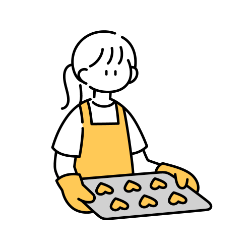

History
- 自己紹介 -
北の大地.5年前に北海道から上京
バレエ５歳から９年間🩰/陸上６年間🏃♀️/少しサッカーとフットサル⚽️
高校卒業後、小さい頃からの夢であったパティシエになるために製菓の専門学校に入学。
卒業後、夢のパティシエの卵に。blue botlle coffeeでお菓子とコーヒーをたくさん学び
現在、新しい夢に向かって奮闘中。

My life
- coffee -
今の私の中で、コーヒーという存在と出会い価値観や視野が広がりました。
休みの日は、必ず好きなお店に行き毎日1杯は飲まないとやっていけない、、中毒ですね笑
コーヒーが苦手の方にもとっておきのお店があります。
私がよく行く、コーヒー屋さんの紹介です❕
苦手意識を持っている方は、"苦い""酸っぱい"の印象。(私もそうでした)
好きになったきっかけは、ブルーボトルで浅煎りのフルーティーなお豆に出会えたからです。
お店に行くと、お豆の種類どうしますか？と聞かれてわからない方は
浅煎りのお豆/エチオピア/ケニア/ニカラグア がオススメです❕
コーヒーとペイストリーで最高のペアリングを楽しんでください❕☕️🍪
📍Blue botllle coffee
清澄白河
📍Fuglen asakusa
浅草
📍Cheeers coffee
鎌倉(先輩のお店）